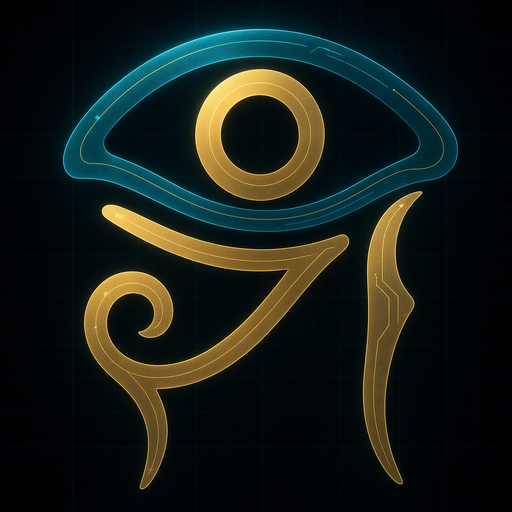

Awesome HORIZON SHIELD
We only list what you don't have to trust.
Every open dataset, public MCP server and verification ledger operated by The HORIZONs K.K. — each row published with a way for a stranger to check it.
Built in construction — the method didn't stay there. The same discipline now covers home-visit nursing reimbursement (JHNRD, already public). First nursing endpoint: Oct 2026.

信じなくていいものだけを、載せる。
Not a normal awesome list
Most awesome lists are a popularity contest with a nice logo. This one runs on the opposite rule.
A normal awesome list
- Anyone who opens a pull request adds a row
- Merit means stars, and how loud the author is
- Placement can sometimes be bought, quietly
- An unflattering fact simply never gets added
- A stranger mostly can't check any single row
- The author is often anonymous, no stake disclosed
Awesome HORIZON SHIELD
- Nobody chooses rows by hand — a server is measured, the register writes the row
- Merit is a DOI, a registry entry, a daily measurement, or a Bitcoin anchor
- The code has no route to add or remove a row for money
- Records that embarrass the operator are retained by design
- One curl checks any row — each ships its own verification path
- The HORIZONs K.K. sells to these industries and says so, up top
Open datasets
Published under CC BY 4.0, each with a DOI you can cite.
JCCDB — Japan Construction Cost Database
Real construction and renovation prices in Japan, plus measured overcharging: an average of ¥830,000 padded per estimate, worst case ¥2.82M (84.9% excess).
65,520 itemsCC BY 4.0 DOI 10.5281/zenodo.21898745Bitcoin block #949356JHNRD — Japan Home-visit Nursing Reimbursement Database
Reimbursement rules for home-visit nursing. Not the numbers — a record of where every number came from, each source ranked statute / agency / secondary. What cannot be confirmed stays marked unconfirmed. Conflicts keep both claims. Searches that found nothing are recorded too.
33 billing items · 68 requirements 26 sources (11 statute) 54 requirements openly marked unconfirmed DOI 10.5281/zenodo.22083722JIDEC — public verification ledger
Estimate-audit records anchored to Bitcoin. The operator cannot alter or delete them. Every record's SHA-256 is recomputable from the published bytes.
OpenTimestampstrust-free verificationPublic MCP servers
All listed in the official MCP registry. Key-less, read-only, streamable HTTP. Measured every day by an instrument that also measures itself.
{
"mcpServers": {
"horizon-shield-kira": { "url": "https://mcp.horizonshield.dev/mcp" },
"yakumo-contractors": { "url": "https://hearing.horizonshield.dev/mcp" },
"jhnrd-nursing-rules": { "url": "https://jhnrd-mcp.oga-surf-project.workers.dev/mcp" },
"jidec-ledger": { "url": "https://jidec.horizonshield.dev/mcp" }
}
}KIRA returns fair-price evidence and red flags but never dictates a "correct" price. YAKUMO never returns prices, and an unverified contractor is never shown to a homeowner. JHNRD returns the statute text and its own uncertainty but never says "you can bill this" — 72 automated checks enforce that on every deploy.
Join — a row you earn
The only way onto this list is the one thing you can't fake: an audit you didn't run.
Pass the independent KIRA audit → get your own verified endpoint.
It checks your estimates against the 65,520 JCCDB items and flags padding, using the same instrument as every row above. Pass, and you receive:
- your own MCP endpoint
https://p0NN.horizonshield.dev/mcpthat answers in your name; - a public conduct history the gate rebuilds daily — that you cannot edit;
- a place on a directory a homeowner can check, not just read.
No pass, no listing. That is the whole value: your customers get a page about you that you can't spin — which is exactly why it is believed.
載る道はひとつ。自分では動かせない監査を通ること。通れば、あなたの名前で答える口と、あなたが編集できない日次の素行記録が付く。だから信じてもらえる。
Falsify us — the standing invitation
We would rather publish a mistake than hide one.
Find a row you can't verify, a number that won't reproduce, or a source that doesn't say what we claim — open a Falsification report. Confirmed findings are kept in the open, with credit; the code has no route to quietly drop them. This isn't a bounty paid in money — it's paid in the only currency this list runs on: being checkable.
誤りは隠すより載せる。壊してみろ、が唯一の保証。
The verification layer
This is what separates this from an ordinary awesome list.
MCP Conduct Register
A machine-generated record of conduct, rebuilt daily from a public API. Nobody chooses the rows. Placement cannot be bought. Records that embarrass the operator are retained, because the code contains no route for removing them.
DOI 10.5281/zenodo.21970931MCP Registry Survey
A full walk of all 22,636 servers in the official MCP registry (2026-08-19). We measured the world before measuring ourselves.
WEDJAT — the human entrance
The live, human-readable verification directory. It draws the same /register rows on
every load, against five published conditions. It shows the checker's own record too — which
failed all five conditions first, kept in the open rather than hidden.
Check a row yourself
curl -s "https://gate.horizonshield.dev/register"
curl -s "https://gate.horizonshield.dev/history?endpoint=https://mcp.horizonshield.dev/mcp"Recompute the record_sha256 from the published bytes and compare.
If it disagrees, that disagreement is itself worth publishing.
[](https://gate.horizonshield.dev/register)